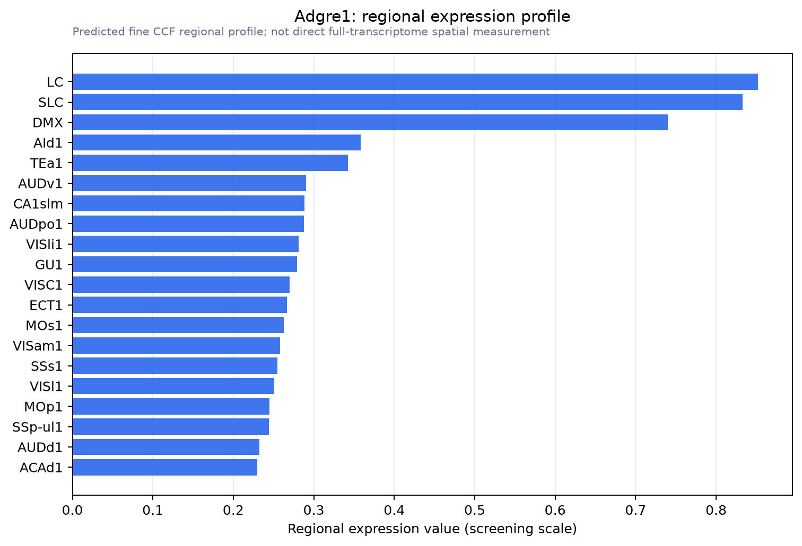

Adgre1
Adhesion G protein-coupled receptor E1 (Cell surface glycoprotein F4/80) (EGF-like module receptor 1) (EGF-like module-containing mucin-like hormone receptor-like 1) (EMR1 hormone receptor)
Spatial tier: RESTRICTED · Class: GPCR · Top region: LC (Locus ceruleus) · Positive regions: 13/554
47.3Discovery Score
38.1Targetability Score
CEvidence grade C
What this means: Adgre1: fine CCF profile is restricted toward LC (top regions: LC, SLC, DMX, AId1, TEa1; 13 positive regions); direct spatial validation is still required.
Direct spatial evidence
MERFISH REGION LOCATOR

Regional expression figure

Predicted WMB × fine-CCF profile; not direct full-transcriptome spatial measurement.
Spatial profile
Evidence and specificity
- Evidence status
- PREDICTED_FINE
- Direct sources
- None; predicted localization only
- Exclusive threshold
- 12 positive regions out of 554
- Spatial specificity
- 0.323
- Top-region fraction
- 0.077
- Filter status
- PASS
Interpretation limits
- Cell-type-to-region projection is imputed expression, not direct spatial measurement.
- Adult reference atlases do not establish stability across age, sex, strain, state, or disease.
- Transcript abundance does not guarantee protein abundance or genetic-tool performance.